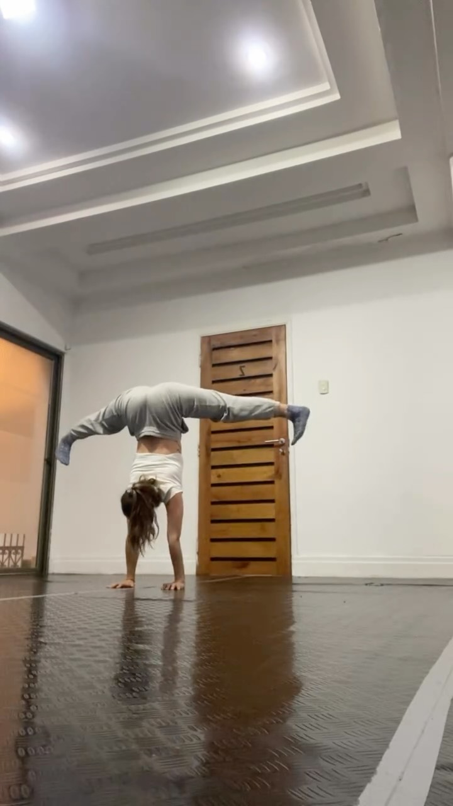

Sala Crisol no es una franquicia ni un gimnasio: es un proyecto autogestionado que
sostienen dos profesoras con sus propias manos — las mismas con las que se paran de
cabeza, corrigen tu postura y barren la sala antes de cada clase.

Fundadora · Profesora · Alma del crisol
Consuelo Ongaro
Consuelo se mueve desde siempre: flexibilidad, equilibrio de manos y artes del
circo son su lengua materna. Después de años entrenando y enseñando en espacios de
otros, decidió armar el propio — un lugar chico, cálido y honesto donde el
movimiento no compite con nadie y la puerta está abierta para cualquier cuerpo.
En la sala dicta Movimiento Flexible (lunes y sábados) y
Equilibrio de Manos (miércoles), y es una de las gestoras de las
tertulias de cine y los Domingos Populares.
«Qué rico es cuando la mente permite mover la cuerpa. Gracias a la vida y a las
personas que me han dado estas oportunidades.»
Esperanza es la otra mitad del crisol. Profesora de Pilates Mat
y Danza Contemporánea, cree en la fuerza que se construye con
paciencia y en los espacios que se sostienen en comunidad. Junto a Consuelo
administra la sala, gestiona los Domingos Populares y co-produce las tertulias con
la Cía. Ffrenesí.
Pilates MatDanza ContemporáneaProducción de eventos
Un crisol es el recipiente que resiste el fuego más alto: adentro, metales distintos
se funden y se convierten en algo nuevo. Eso es exactamente lo que pasa acá cada
semana — pilates junto a bellydance, handstands junto a cine, gente que llega a
entrenar y termina quedándose a la tertulia.
La sala es autogestionada: se sostiene con las clases, los arriendos
y los aportes de su comunidad en los Domingos Populares. No hay socios inversionistas
ni letra chica; hay tatamis, un espejo gigante, plantas que llegaron de regalo y la
convicción de que los espacios culturales se construyen entre todas y todos.
También trabajamos con profes y proyectos aliados que hacen suya la sala:
Kathia Luminus (Bellydance Fusión), la
Compañía Amor Expresamos (Danza y Filosofía) y la
Cía. Ffrenesí (tertulias de cine).